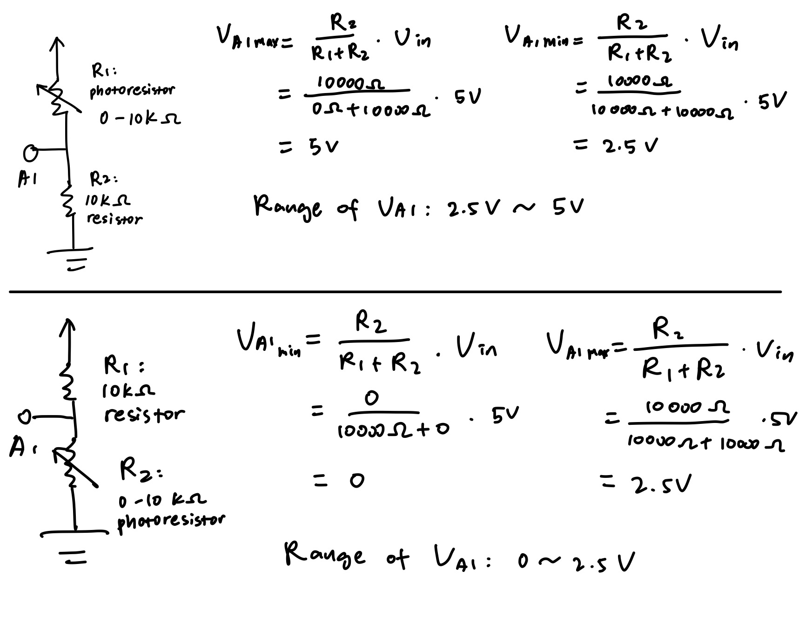
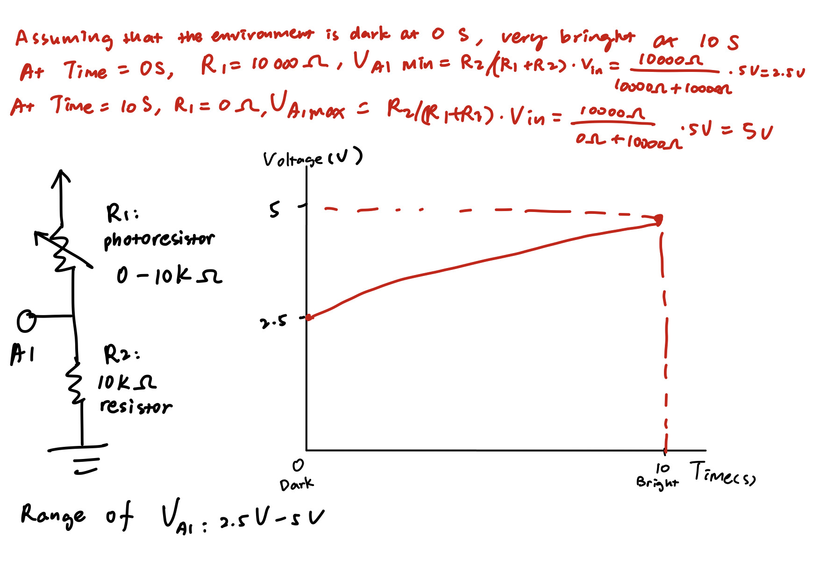

Schematic: The voltage divider consists of a photoresistor and a resistor, connected to 5V power. The green LED is connected to a resistor and pin 5. The white LED is connected to a resistor and pin 10.
Circuit: (1) For the voltage divider, I used a 0-10k ohm photoresistor and a 10k ohm resistor. When the environment is dark, the photoresistor would have a resistance of 10k ohm. Using the equation for the voltage divider, V_A1min = R2/(R1+R2) * V_in = 10000 ohm / (10000 ohm + 10000 ohm) * 5V = 2.5 V. When the environment is bright, the photoresistor would have a resistance of 0 ohm. Using the equation for the voltage divider, V_A1max = R2/(R1+R2) * V_in = 10000 ohm / (0 ohm + 10000 ohm) * 5V = 5 V. So the range of voltage I might read at A1 would be from 2.5 V to 5 V. (2) For the resistor connected to the green LED, I used ohm’s law V = I*R to find the resistance I should use. Since the voltage drop for a green LED is 1.8 V, (5 V – 1.8 V) = 0.02 A * R, R = 160 ohm. Since there is no 160 ohm resistor in the kit, so I chose to use the 220 ohm one because the way to make the current to be less than 20 mA is to choose a resistor with a slightly greater resistance. (3) For the resistor connected to the white LED, I used ohm’s law V = I*R to find the resistance I should use. Since the voltage drop for a white LED is 3.3 V, (5 V – 3.3V) = 0.02 A * R, R = 85 ohm. Since there is no 85 ohm resistor in the kit, so I chose to use the 100 ohm resistor because the way to make the current to be less than 20 mA is to choose a resistor with a slightly greater resistance.
// setup
// photoresistor: 5V power and A1
// green LED: pin 5
// white LED: pin 10
// initialize pins 5 and 10
void setup() {
pinMode(5, OUTPUT); // set pin 5 as OUTPUT
pinMode(10, OUTPUT); // set pin 10 as OUTPUT
Serial.begin(9600); // communicate with serial monitor, set data rate to 9600 bits per second
}
// the brightness of the green LED decresases as the brightness sensed by the photoresistor decreases
// if the value of brightness after mapping is less than 70, the white LED turns on
void loop() {
int analogVal = analogRead(A1); // set int analogVal to the value read from analog pin A1
Serial.print("analogVal = "); // print "analogVal = "
Serial.println(analogVal); // on the next line print the value of int analogVal
int mappedVal = map(analogVal, 0, 1023, 0, 255); // set int mappedVal to the value mapped from range 0-1023 to 0-255
Serial.print("mappedVal = "); // print "mappedVal = "
Serial.println(mappedVal); // on the next line print the value of int mappedVal
analogWrite(5, mappedVal); // set the brightness of the green LED to int mappedVal
// if int mappedVal is less than 70, the white LED turns on for 100 ms
if (mappedVal < 70) {
Serial.println("White LED On"); // on the next line print "White LED On"
digitalWrite(10, HIGH); // turn on the white LED
delay(100); // wait for 100 ms
}
digitalWrite(10, LOW); // turn off the white LED
}

Circuit Operation: Once the circuit is connected to power, it starts to set int variable analogVal to the value reading from analog pin A1. Then the int variable analogVal is printed. Since analogWrite takes value from 0 to 255 and analogRead takes value from 0 to 1023, int variable analogVal is mapped from a range of 0-1023 to 0-255. Then the mapped value mappedVal is printed. Using the analogWrite variable, the brightness of the green LED is set to int mappedVal. If mappedVal is less than 70, the white LED turns on for 100ms. The white LED turns off.
Addtional Questions
Question 1:
Q1. The variable resistor could be at either R1 or R2 in terms of functionality, because the two resistors are connected in series and that the 10k ohm resistor could always provide the function as limiting the current. However, the range of values that might be read at A1 is different if the two resistors are swapped. If the photoresistor is at R1 and the 10k ohm resistor is at R2, using the voltage divider equation, the range of voltage at A1 is from 2.5 V to 5 V. If the photoresistor is at R2 and the 10k ohm resistor is at R1, using the voltage divider equation, the range of voltage at A1 is from 0 V to 2.5 V. (See calculation on the picture)
Question 2:
2. Assuming that the environment is dark at time = 0 s and very bright at 10 s, the voltage at A1 would be 2.5 V at 0 s and 5 V at 10 s. (See calculation and graph on the picture)
Question 3:
3. Since a 10-bit reads from 0 to 1023 and a 16-bit reads from 0 to 65535, I would want to map the range of value read from 0 to 65535 to a range of 0 to 1023 that a 10-bit PWM could understand. Therefore, I would change my code to int mappedVal = map(analogVal, 0, 65535, 0, 1023);